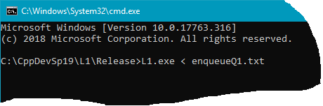
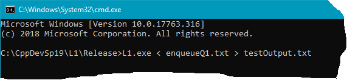
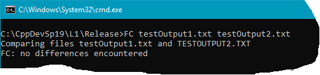

Testing - With a Test Script
Overview
- Command Interpreter software application takes its input from the user through keystrokes made by the user on the keyboard.
- Any app that takes input in this manner can easily be tested with a test script.
- From a Command Prompt (i.e.,
C:\CppDevSp19\L1\Release> ) you can use what is known as file redirection to tell your L1.EXE to take its input from a file, rather than having a user type in all the commands. This means you can enter the commands into a text file (using Notepad), save the text file, and then reuse this text file over and over again to test your app.
- In this screen shot,
L1.exe < enqueueQ1.txt has been typed in at the command prompt:
- < - i.e., the less than symbol, tells L1.EXE app to take its input from the file that follows, instead of from the keyboard (this is called file redirection)
- enqueueQ1.txt - is the name of the file from where L1.EXE will obtain its input

Capturing the Output
- Capturing the output from L1.EXE.
- Additionally, you can use file redirection to capture the output coming from the app, and have it placed into a file.
- By capturing the output in a file, you can examine the file's contents to make sure that L1.EXE did all it was supposed to do.
- You can then use Notepad (for example) to examine the contents of the file.
- Here is a screen shot showing how to redirect the output to a file called: testOutput.txt. Here you'll see toward the end of the line the characters "> testOutput.txt", the greater than sign tells the operating system to redirect the output to the file named "testOutput.txt".

Using FC to Compare
- FC is a utility app that can be run from the command prompt. FC compares the contents (character by character) from to two different files.
- To get help on the FC command, type FC /? at a command prompt.
How to use FC when testing your software app:
- Run the test script on your version of a program and use redirection to capture the output in a file.
- Run the same test script on the corresponding program in the CppDevSp19\Samples folder (or if you have a solution .exe elsewhere, then use that .exe) and capture its output.
- Then use FC to compare output from your app with the output from the app found in the Samples folder. If the output from the two apps is the same, FC will report no differences encountered.
- No differences encountered means that each and every character of the two files being compared are exactly the same and in exactly the same location. This includes white space such as spaces and return characters.
- In the screen shot below, the file "testOutput1.txt" was captured by running a test script on the application being developed. "testOutput2.txt" was captured by running the very same test script on the corresponding app from the Samples folder.

- To obtain "no differences encountered" requires a lot of work. When there are differences, FC will show you the lines that are different. Use FC's output to determine where in your program that you must make changes in order to make your app work like the already completed app found in the Samples folder. After making changes to your software, rerun the test script, then rerun FC to see if you get "no differences encountered". Follow this process over and over again until you finally obtain "no differences encountered".
Tutorial on the Command Prompt
- Use your favorite search engine and search for "windows command prompt tutorial"
- Minimum commands that you should learn:
- dir - list the files in the current folder
- cd - change directory (folder)